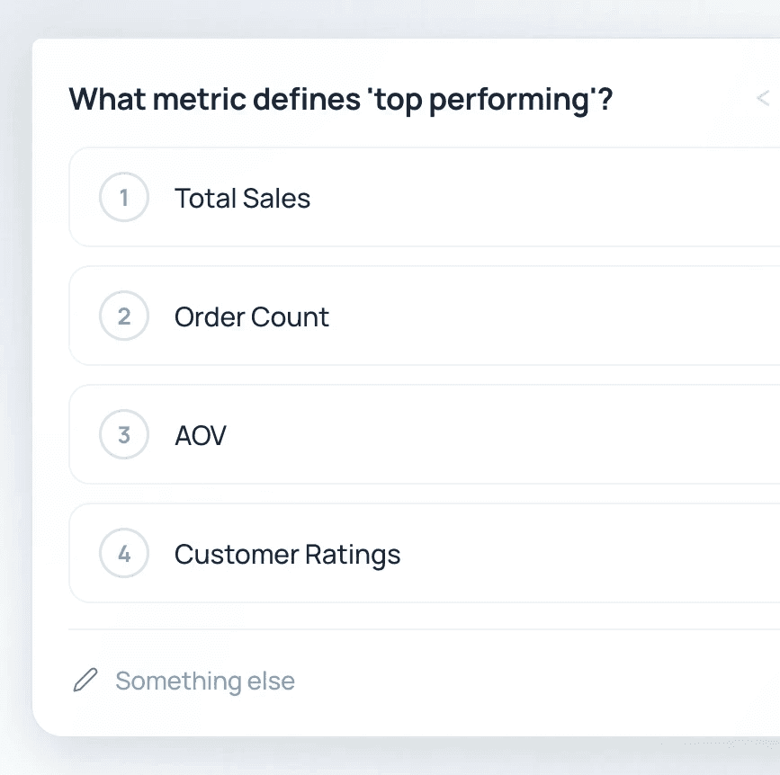

About the project
Loop is an AI-powered restaurant operations platform. It brings together data from across a restaurant's systems and uses AI agents to help teams understand what's happening, diagnose problems, and take action.
Now imagine walking into a grocery store, asking the clerk for a loaf of bread, and being told: "Sorry, this is the vegetable aisle. Go outside, guess which door leads to the bakery, and ask again."
That was Loop's AI experience.
Understanding the problem — The Wrong-Door Problem
We had built four brilliant, hyper-capable, task-specific AI agents. The problem was, we had also given each of them its own front door.
- Loop Chat — open-ended analysis and broad questions.
- Loop Charts — building widgets and dashboards.
- Loop Voice — running scheduled verbal debriefs out loud.
- Loop Sheets — financial modelling and projections.
We were operating under an aggressive "ship-first" culture: whenever a new capability worked, we shipped it, each with its own entry point. Before long, we had quietly accumulated eight different doors scattered across the platform.
On paper this looked organised — each agent had a job, each job had a place. But people don't log in at 9 AM thinking about system architecture. They think about what they need to get done.
What the telemetry showed
- Our landing agent, Loop Charts, looked enough like a general-purpose assistant that users asked it all sorts of things. 6% of landing sessions were out-of-scope requests that it simply refused. Then users tried again somewhere else.
- Users moved from Charts to Chat nearly twice as often as the other way: 51 cases vs 30.
- In other words: people landed on the main screen, made their best guess, got rejected, and then tried to figure out where they were supposed to go.


Previous product 1 / 7
Saddest finding — Flavia's story
A customer named Flavia wanted to edit an ad-spend plan. She asked the landing agent — it rejected her. Two minutes later she manually switched to Chat and tried again — rejected again.
The platform actually supported what she was trying to do. The capability existed; it was just hiding behind the wrong door.
Flavia closed the tab and left.
Uncovering the real behavior
Before you can fix human behavior, you have to filter out the ghosts.
I started with three months of telemetry: 1,776 interactive sessions across 473 real users. The first thing I learned had nothing to do with our users — it was about our data.
The 49% ghost traffic
The raw session logs looked impressive — lots of activity, lots of "sessions". Except nearly half of them weren't people.
I cross-referenced session timestamps with browser activity in PostHog. 49% of traffic had no pageviews, cursor movements, or any other sign of a human. It was automated report runs and internal evaluation scripts running in the background. Half of our "active users" were machines talking to machines.
So I stripped out the ghosts and went back to the data.
Assumptions that didn't survive the cleanup
| We thought… | What was actually happening |
|---|---|
| Our funnel is leaking. We need more reach. | Reach was flat at 20–24% of monthly users. But among people who completed an agent session, 48% returned on 2+ days. We didn't have a retention problem. We had a locked front door. |
| The AI keeps failing technically. | Technical errors caused just 1% of session deaths. The bigger problem was unhelpful responses: 17% ended on unanswered clarifying questions, and 13% on flat "no-data" refusals. |
| Users are ignoring our clarifying questions. | Not quite. Median turn latency was 74 seconds, with p95 stretching to nearly 5 minutes. In 44% of unanswered clarifying questions, the user had already left before the prompt even rendered. |
The last one told us they weren't ignoring us. Our silence had simply outlasted their patience.
Why it mattered
- When a real user hit one of these soft dead-ends, 61% didn't return within 24 hours.
- First impressions were the most fragile: 22% of first-time users hit a dead-end, vs 15% of returning users.
The more I looked, the less this felt like an AI reliability problem. The intelligence was there. We were losing people in the moments where the product failed to get out of its own way.
Fixing the visual identity crisis
Moving from four separate dialects to a single, atmospheric design language.
Fixing the interaction logic was only half the job. Four agents had been built by four teams at four points in time, and each had its own personality:
- Chat felt like a sparse messaging app.
- Charts looked like the main landing page that would solve it all.
- Sheets had gone full retro spreadsheet.
They spoke to the same user but didn't look like the same agentic layer of the same product. Switching wasn't just a mental tax — it was a visual mess. So we explored a shared Loop language, and kept coming back to three ideas:
- Atmosphere over containers — moving away from utility-heavy grey cards toward glass, depth, and the Powder Steel palette.
- Data as the hero — letting the information take centre stage instead of wrapping everything in layers of UI.
- A brand that reacts — turning the Loop mark into a dynamic status light that could breathe, shimmer, and settle depending on what the AI was doing.
The many faces of one front door — from early explorations to the final look and feel for our agentic layer.


Final version:


Designing for two audiences: humans + LLMs
With an agentic interface, the design system isn't just a library that helps human designers make consistent screens. It's also a set of constraints that helps the AI make consistent decisions.
- The system had 8 foundations, 17 primitives, and 14 compositions.
- More interesting was how we documented them: guidelines written almost like render rules — specific enough that an LLM could follow them without interpreting our intentions.


The architecture call: Super Agent
Scope should be the platform's problem, not the user's homework.
With research and visual foundations set, we faced a crossroad:
- Option A: silently route prompts behind the scenes while keeping the separate interfaces.
- Option B: consolidate everything into a single front door.
We chose full consolidation: Super Agent.
ONE FRONT DOOR
“The user states the goal;
the platform finds capability.”
Intent classification
& diagnosisReport build
& chartsFinancial
projections
Instead of asking users to pick a door, we built one conversational input. When a user types a prompt, Super Agent classifies the underlying intent — metric lookup, report generation, financial analysis, plan edits, or diagnosis — and dispatches the request to the right backend capability automatically.
Designing for momentum
Turning the little moments where people gave up into something the interface could actually fix.
The telemetry gave us a list of where people got stuck. So instead of designing Super Agent around features, we designed it around those moments of friction. Each pattern has a specific problem behind it.
Keep the work where you can see it
- Friction: AI-generated work disappears into the conversation. A chart, table, or financial plan you need for the next question is buried a few messages later. Users scrolled back and forth, breaking their train of thought.
- Idea: Give the work its own place — a persistent split canvas: conversation on the left, generated artifacts on the right. Dashboards, sheets, reports and other outputs render there in real time. Opening or modifying an artifact brings it back into that space.
- Result: The chat could keep moving. The work stayed put.


Make waiting feel honest
- Friction: Average response time was 74 seconds — a long time to stare at a spinner. Users disappeared during those gaps, unsure whether the product was working or had given up.
- Idea: Show the work instead of pretending the wait isn't happening. We replaced the spinner with the Loop Log, a live stream of what the agent is actually doing, e.g.
Resolved data sources → Ranking insights by impact. Each step can include timing, row counts, and inspectable SQL. - Result: The point wasn't to make the AI look busy. It was to make the wait legible.


Don't make people type what they could tap
- Friction: Open-ended clarification questions caused 17% of session deaths. The agent asked for a parameter, left a blank box, and handed the work back to the user.
- Idea: Make the next step obvious. When Super Agent was ~90% sure what the user meant, it offered lightweight Clarification Cards with single-tap options (specific stores, date ranges, platforms, etc.).
- Non-negotiable rule: Clarification should never become a roadblock. Cards were always skippable and never blocked the composer. If ignored, the agent proceeded with its best stated assumption — e.g. "Proceeding using the last 30 days of data…"
- Result: The interface could ask for help without demanding it.

{kind=link}

Put the interesting question within reach
- Friction: Diagnosis was our marquee demo feature, but appeared in only 2% of first queries. 66% were simple lookups and 30% were report-building. Tempting conclusion: people don't care about diagnosis. Our hypothesis: they didn't know to ask for it.
- Idea: Instead of teaching users new vocabulary, bring the capability to them. Every metric result got an inline follow-up suggestion: "Why did this change?"
- Result: One tap turned a passive number into an investigation.


And then it started looking like one product
Bringing four agents, one design language, and a whole lot of thinking together. Some more parts of the whole design system: